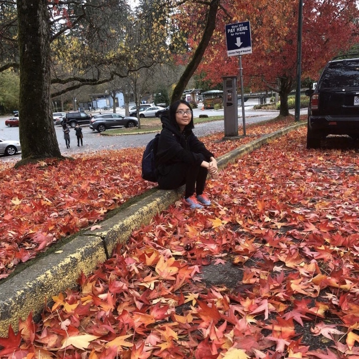

Hien Nguyen
Designer
I am aspiring graphic designer and brandeveloper based in London, Ontario, Canada. For me, designing is solving visual problems. I work with my team in Fanshawe College to help businesses' visualize their brand identity and reach out to their target audience in the smoothest way. To achieve these, I focus on working closely with teammates to find the best marketing strategy solutions. Aside from graphic design, I have expertise in illustration and motion graphic. Tools frequently used in my projects: